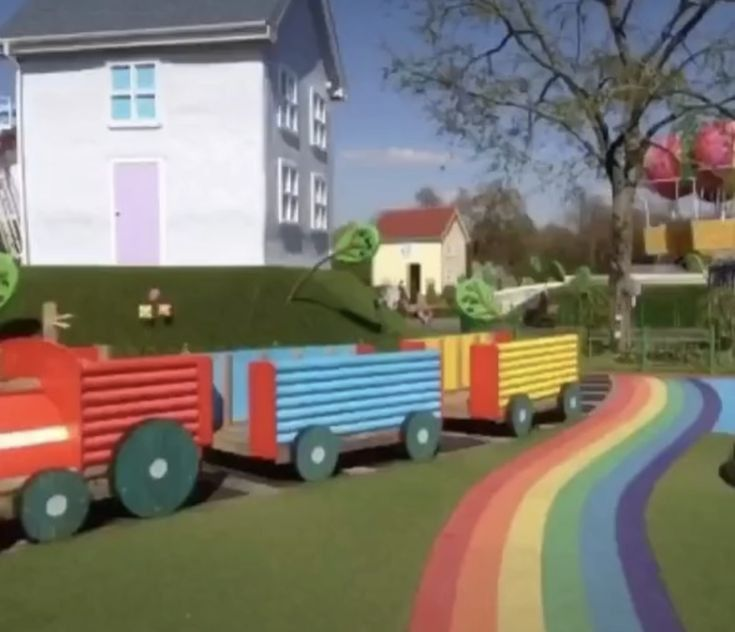
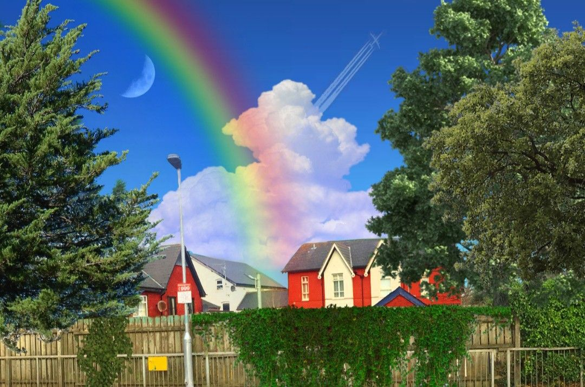
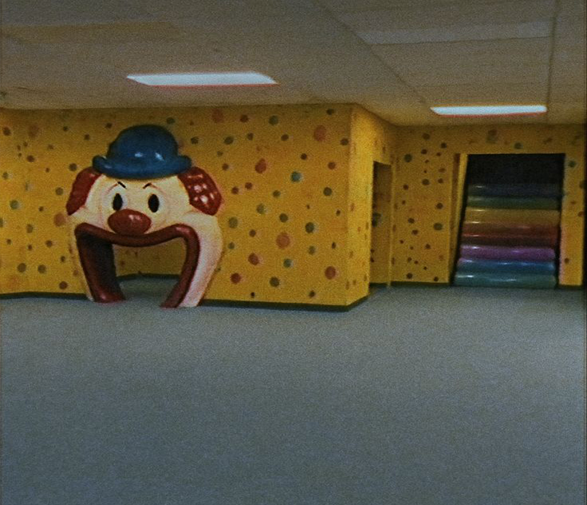
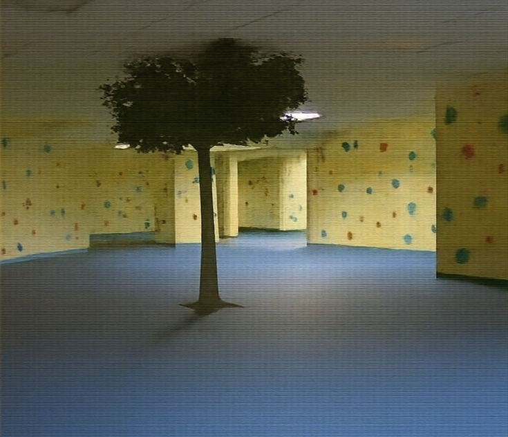
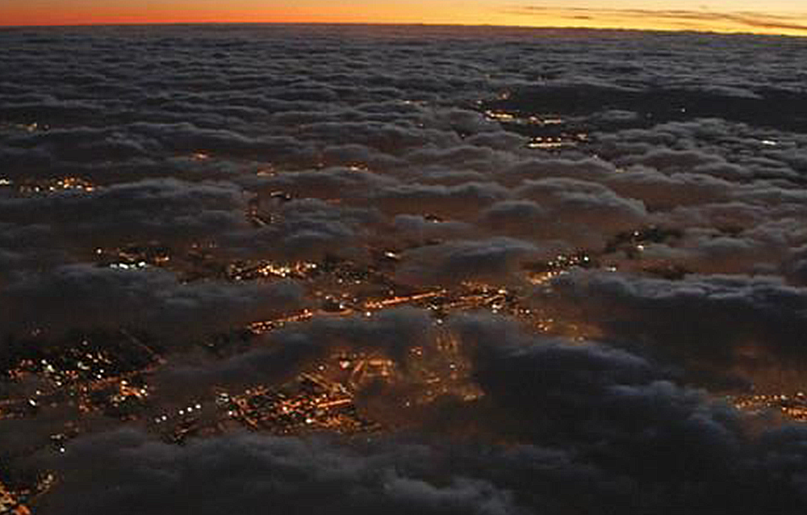
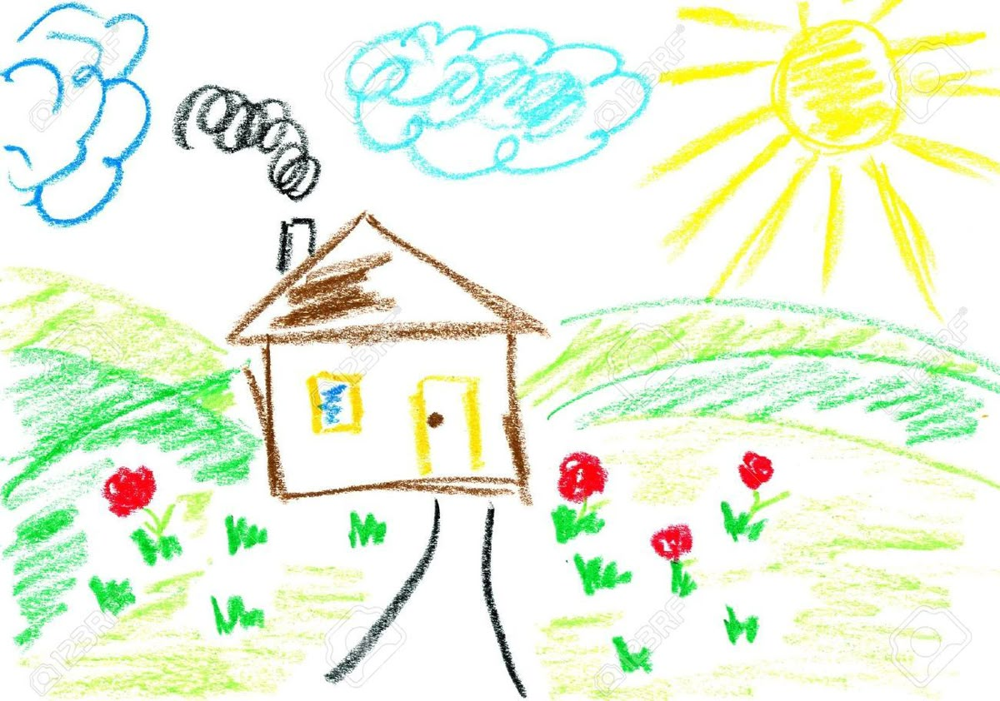

Foram cinco minutos. Depois dez. Quinze. Vinte. E quando o relógio marcou trinta, nada. Absolutamente nada da próxima versão aparecer.
Passei as mãos pelo rosto, soltando um suspiro que parecia carregar toda a minha paciência evaporando junto. Eu já tava inquieta, com aquela sensação de que cada segundo era uma provocação pessoal. Quando olhei pra Laetitia, lá estava ela, sentada e tranquila, com uma expressão tão serena que dava raiva. Parecia estar admirando uma paisagem invisível que só a infeliz conseguia perceber.
— Ugh, Laetitia, de novo! — resmunguei, levando a mão à testa.
— Hm? De novo o quê? — ela perguntou, arqueando uma sobrancelha.
— Não se faz de idiota, você esqueceu de abrir o portal de novo! — falei, elevando a voz conforme a irritação subia.
— Me poupe, vai! Eu já abri o portal, reclamona. — respondeu, revirando os olhos com a maior calma do mundo.
— Claro, claro. E a próxima convidada está aqui na minha frente agora, né? — retruquei, com a ironia escorrendo em cada sílaba.
— Olha, a culpa não é minha se essa aí não apareceu, tá? — rebateu, cruzando os braços. — Eu abri o portal, fiz a minha parte. Se ela não quis vir, problema dela! Vai se catar!
Passei a mão pelo queixo, tentando raciocinar em meio à frustração.
— Talvez essa versão tenha um pingo de juízo e tenha percebido que não é normal um portal se abrir do nada no seu mundo e você simplesmente pensar “ah, que legal, um buraco colorido, bora ver pra onde dá”. Tá certíssima, no fundo. Imagina se meter nessa loucura? — murmurei, já pegando a folha em cima da mesa, pronta pra anunciar a próxima. — Enfim, já que essa não veio, nossa próxima convidada é—
Mas então, quando eu estava prestes a terminar minha frase, uma explosão de fumaça vibrante e cintilante tomou conta da frente da mesa, parecendo um arco-íris em crise de identidade. Quando o ar começou a se dissipar, pude ver uma garotinha sentada em cima da mesa, balançando a cabeça lentamente, num ritmo calmo e despreocupado, alheia ao pandemônio que acabara de causar.
Pelo conjunto das roupas, o penteado extravagante e a paleta de cores berrante, dava pra jurar que ela tinha saído direto de um circo. Mas havia um detalhe que realmente chamava a atenção: a pele. Aquilo definitivamente não era pele humana, nem aqui e nem na China! Parecia mais uma boneca de pano.. porém viva.
Conclusão? Foda-se.
Porque o susto foi tão grande que eu perdi completamente o equilíbrio e fui pro chão junto com a cadeira. Naturalmente, a plateia caiu na gargalhada.
— AI, P███ QUE P████! QUE P████ É ESS—
Parei no meio do palavrão.
As palavras simplesmente não saíam. Pareciam até ter sido censuradas por uma força superior, acompanhadas de um efeito sonoro ridículo de botas de borracha quicando. E não, eu sabia que aquilo não era coisa da produção, nem o Ash seria tão criativo assim.
— Hm? Mas que som foi esse? Mas que p████ é— — tentei repetir, mas o bloqueio veio de novo. — Qual é, tá de brincadeira comigo?!
A criatura olhou pra mim e levou a mão à boca, fingindo uma surpresa teatral que chegava a ser irritante. Logo em seguida, balançou o dedo indicador na minha direção.
— Nanãooo.. isso é muito feio! — disse ela, com um sorriso travesso e um tom que misturava reprovação e zombaria.
— Ugh, que droga, isso daí era pra ser eu mesmo? — perguntei, me levantando devagar enquanto observava o meu eu de pano se equilibrando sobre a mesa.
— O que você acha? — retrucou Kenda, lá do fundo, com a clássica expressão de quem perdeu a paciência há tempos.
A miniatura animada de mim virou o olhar para o estúdio inteiro, levantou-se e ficou de pé sobre a mesa. Levantou os bracinhos e começou a agitá-los com entusiasmo.
— Eeeiii, eii! Quem são vocês, hã? — gritou, empolgada. — Eu tava brincando de pega-pega com meus amiguinhos quando um portal enorme apareceu do meu lado! Achei divertido e entrei.. do meu jeitinho, claro!
Então ela juntou as mãos sobre a cabeça e as afastou lentamente. À medida que fazia o movimento, um arco-íris cintilante surgia entre elas, e, no meio das cores, palavras flutuavam, soletrando em letras brilhantes:
“DO MEU JEITO.”
Nos segundos seguintes, o arco-íris e as letras se dissiparam. A pequena versão de mim colocou a mão na cintura e abriu um sorriso tão largo que parecia querer engolir o próprio rosto.
De repente, Ashley surgiu ao lado da minha mesa, inclinando-se curiosa. Os olhos dela brilhavam daquele jeito característico, o mesmo olhar que ela lança quando vê algo que considera absurdamente fofo.
— Oooohh, meu Deuss! Você é tão bonitinhaaaaa! Qual o seu nome? — perguntou num tom meloso, enquanto apertava uma das bochechas da minha versão de pano.
— Eiiii! Hahah, isso faz cócegas, para! — ela respondeu entre risadas, tentando afastar a mão de Ashley com pequenos tapinhas.
Depois de uns segundos de gargalhadas, a miniatura finalmente pigarreou, tentando parecer séria, o que, convenhamos, não combinava nem um pouco com ela.
— Sabe, agora que você perguntou, eu tenho vários nomes! — começou, erguendo os bracinhos.
— Vários nomes? — perguntei, arquenado a sobrancelha.
— Aham! — ela balançou a cabeça positivamente, enérgica. — Todos os meus amigos gostam de ficar me chamando por uma variedades de nomes específicos! Posso contar todos eles pra vocês?
— Ehh, pode sim, mas—
— Ótimo! — exclamou a pequena menina, me interrompendo na hora. — Então vamos lá! Me chamam de..
A partir daquele ponto, eu já senti o arrependimento me esfaquear cruelmente nas costas. Definitivamente não havia sido uma boa ideia, porque a garota ficou citando, pasmem, um total de praticamente 1000 NOMES (e contando) por DUAS HORAS INTEIRAS. É isso aí mesmo, você não entendeu errado. Eu sinceramente não tava botando fé nenhuma de que ela tinha mesmo esse monte de nomes, porque não podia ser possível que os amigos dela tenham o cérebro derretido dessa forma. Mas ela tava citando todos de forma tão determinada que eu não podia simplesmente descartar a possibilidade de ser real.
Eu olhei ao redor e pude ver que tanto a plateia quanto os meus amigos estavam praticamente exaustos de ouvir tanto nome, comigo inclusa. A única exceção era Ashley, que ouviu cada nome com uma atenção questionável.
Eu balancei a cabeça negativamente, me aproximei da garota e toquei o ombro dela para chamar sua atenção.
— Muito bem! Muito bem! Já entendemos! — exclamei com um sorriso forçado. — São todos nomes muito bonitos!
— Ah, qual é! Cê fez eu me perder! — disse a garota, com um olhar meio frustrado. — Ainda tinham mais e—
— Não! Não! Tudo bem! — interrompi, meio desesperada. — Mas olha.. você não tem um nome que você prefira ser chamada, não?
— Ah, eu curto quando me chamam de "Miska" ou "Aurora". — ela deu de ombros. — Mas eu prefiro Aurora! Miska é feiozinho!
Infelizmente não posso bater em uma criança.
— Aurora! Que nome lindo! — Ashley disse, ainda mais fascinada do que antes. — E de onde você veio, Aurora??
Era possível ver o brilho nos olhos de Aurora ao ouvir a pergunta. Ela se virou para Ashley com um sorriso largo, e então começou:
— Eu vim de um mundo muuuuuuuuiiito bonito! Um lugar perfeito, onde tudo é feito de arco-íris e alegria! — disse, olhando para o teto do estúdio, parecendo até poder enxergar um pedaço do seu “paraíso” lá em cima.
E quando digo isso, não tô exagerando. Diversas imagens flutuantes surgiram acima da cabeça dela como por mágica.




— Uiiii, que tudo! — comentou Ashley, encantada com as fotos. — E o que vocês fazem por lá?
As imagens sumiram deixando um rastro cômico de fumaça. E, em seguida, a resposta de Aurora eu veio acompanhada de pulinhos empolgados:
— Aaaah, a gente brinca de um monte de coisa! Esconde-esconde, pega-pega, estátua, mas a minha preferida é a brincadeira de imaginar! — disse Aurora, girando sobre si mesma. — No meu mundo, o segredo de tudo está na imaginação!
— Hmmmm, a imaginação, é? — Ashley perguntou, com aquele tom de quem está prestes a ver algo inacreditável.
— Aham! Aham! — respondeu Aurora, animadíssima. — Quer ver? Só observar!
Ela então fechou os olhos e ficou imóvel por alguns segundos. Três, pra ser exata.
E, do nada, o estúdio simplesmente desapareceu.
Não só ele, o prédio inteiro, as luzes, a plateia, tudo. Num piscar de olhos, o chão sumiu sob nossos pés, e o mundo virou um vazio azul e dourado.
E foi aí que me dei conta, com o estômago despencando..

Não tinha mais chão, nem estrutura, muito menos uma explicação.
Olhei para baixo e, no mesmo instante, meu cérebro entrou em modo de pânico total. As nuvens passavam por baixo dos meus pés, e, entre as brechas brancas e translúcidas, eu conseguia ver as luzes da cidade cintilando lá embaixo, pequenas e distantes como vaga-lumes. Engoli seco, tentando entender o que diabos estava acontecendo, e virei o olhar lentamente para Aurora, que, por algum motivo, parecia SUPER DE BOA com o absurdo da situação.
— … O que p████ você acabou de imaginar? — perguntei, com a voz falhando entre o desespero e a incredulidade.
Ela abriu um sorriso largo, como se tivesse acabado de revelar a maior genialidade do século:
— Eu imaginei a adrenalina de pular de um avião!
Do outro lado, Ash levou a mão ao rosto, cobrindo os olhos em puro desespero.
— Ai, meu Deus, de novo não.
De repente, começamos a despencar. Eu, meus amigos, a plateia, todo mundo caindo numa velocidade que desafiava o bom senso e a gravidade. Os gritos ecoavam em uníssono, uma mistura caótica de desespero coletivo e puro terror.
Enquanto isso, a infeliz de pano estava se divertindo como num parque de diversões:
— YUPIIIIIII, HAHAHAAH! ISSO É DEMAIS, NÃO É? — berrou Aurora, rindo como uma maníaca enquanto o resto de nós tentava não morrer de infarto antes da queda.
— NÃO, NÃO É! FAZ ISSO PARAR, PELO AMOR DE DEUS! — gritou Jeffrey, agarrado em Kenda de um jeito tão patético que parecia uma cena de série de comédia.
— AAAI! ME SOLTA, DESGRAÇA! — Kenda urrou, tentando empurrá-lo pra longe enquanto distribuía socos a esmo.
— EU NEM SEI PORQUE TÔ GRITANDO, MAS TÔ ENTRANDO NA ONDA! — berrava Laetitia, completamente fora de contexto, mas aparentemente se divertindo com o caos.
Então, Aurora ergueu as mãos no ar e anunciou, com a serenidade de quem não entende o perigo:
— TUUUUDO BEEEM! NÃO PRECISAM SE PREOCUPAR! NINGUÉM PULA DE UM AVIÃO SEM PARAQUEDAS, CERTO?!
A queda começou a desacelerar.
De repente, senti algo puxando meus ombros, uma mochila de paraquedas. Todos ao redor também estavam equipados, flutuando suavemente em meio às nuvens.
— Ai, graças a Deus. — murmurei, soltando o ar com tanta força que parecia ter tirado um iceberg das costas.
Enquanto eu tentava recuperar o fôlego, Ashley soltou um “IIIIIHUUUUUUU!” que ecoou pelo céu, agitando os braços como se estivesse num desfile. A mulher quase morreu há trinta segundos, mas parecia prestes a pedir bis.
— ISSO FOI INCRÍVEL! FAZ DE NOVO! FAZ DE NOVO! — gritou, encarando meu outro eu de pano com olhos brilhando de empolgação.
— Não faz de novo… não faz de novo, pelo amor de Deus…
Eu murmurei para mim mesma, mas adivinha? Não adiantou de merda nenhuma, porque antes que eu terminasse de respirar fundo, pisquei, e o mundo já tinha mudado de cenário.
O céu, as nuvens, o paraquedas, tudo se foi.

Olhei ao redor e, por um instante, achei que tava sonhando.
O mundo parecia ter virado uma folha de papel. Quando levantei as mãos, percebi o absurdo: estavam desenhadas. Rabiscadas, na verdade, como todo o cenário. E não só eu, a plateia, meus amigos, até aquele demônio desgraçado pareciam ter sido criados por uma criança de cinco anos com lápis de cera e excesso de cafeína.
— Meu Pai… O que essa m████ deveria significar agora? — murmurei, passando a mão no rosto.
Foi então que Aurora surgiu ao meu lado numa explosão de arco-íris, porque claro, por que não? Ela flutuava à minha esquerda, sorrindo como se tivesse acabado de aprontar algo terrível e estivesse orgulhosa disso.
— Primeiramente, eu já falei que isso é muito feio! — exclamou, balançando os bracinhos costurados como quem dá um chilique em miniatura. — Ahem! Segundamente, eu também adoroooo desenhar no meu mundo, sabia disso? Entãoooooo, nós somos desenhos agora! Tipo, literalmente, sabe? Sabe? Hahahhahaahah!
Aurora se aproximou do meu rosto e começou a cutucar minha bochecha, gargalhando feito uma idiota. Eu? Só fiquei parada.
Ashley, vendo aquilo, tapou a boca com as duas mãos, tentando conter o riso e falhando miseravelmente. Aparentemente, não estava nem um pouco preocupada por parecer uma aberração rabiscada. Pelo contrário, achava tudo hilário. E, pelo visto, os outros também, já que o estúdio inteiro começou a rir também.
— Qual é? Isso é ridículo! Acho que vocês não perceberam que essa coisa é um perigo, não é? — reclamei, cruzando os braços, sem conseguir acreditar no nível de despreocupação geral.
— Ah, Miska, ela é uma graça, vai! — disse Jellie, sorrindo e dando de ombros. — Embora eu confesse que eu não gostei muito do meu design.. meu rosto tá feio que dá dó!
— É, o bom é que você só reclama do seu rosto. — comentou Kenda, aparecendo do nada ao lado dela, com a calma de quem aceita o caos como rotina.
Ela estava desenhada no mais puro estilo “boneco de palito”, com um borrão rosa horroroso no topo da cabeça que, aparentemente, era o cabelo dela.
— Hum, mas que palhaçada! — Kenda exclamou, indignada. — Por que todo mundo ganhou um corpo desenhadinho e eu fiquei presa nesse rabisco horroroso?!
Minha outra versão, que até então tentava disfarçar o constrangimento, olhou para Kenda com um sorriso envergonhado e começou a rir, nervosa.
— A-ahh… é que, sabe… eu meio que fiquei com preguiça, tá? — murmurou, juntando os dedos indicadores e desviando o olhar, como uma criança que acabou de confessar uma travessura.
— Heeeeeeeeeeey! — gritou Ash, surgindo do nada como uma granada emocional entre as duas. — Tá tranquilo! Essa aparência tá perfeita, combina com ela mesm—
Kenda sequer deixou ele terminar.
Kenda, sem hesitar um segundo, acertou um chute certeiro no meio das pernas dele. Ash se curvou na hora, levando as mãos às partes baixas enquanto gritava de dor, contorcendo-se como se tivesse levado um tiro. Pois é, mesmo com aquele corpo tosco de desenho infantil, a força dela parecia intacta.
— Vai se f████, que tal? Tem muito mais de onde veio esse! — resmungou, erguendo o bracinho de palito num gesto desafiador, enquanto uma expressão raivosa se formava em seu rosto rabiscado.
Laetitia viu toda a situação, e o que ela fez? Só deu de ombros, ficou ali existindo, pouco se fodendo. Eu não poderia esperar menos, não é?
Minha outra versão, vendo o desastre se instaurar, bateu palmas duas vezes para tentar recuperar o controle da situação.
— Tá bem, tá bem! Sem mais brigas, gente! Violência é feia também, sabiam? — disse, sorridente, tentando soar animada. — Que tal fazermos algo divertido agora?
— Não! Chega! — exclamei, exasperada, levantando as mãos. — Eu me recuso a continuar participando dessa maluquice! Laetitia, por favor, leva essa coisa de volta pra dimensão dela antes que eu perca o resto da minha sanidade!
É.. pois é.
Agora, estávamos dentro de uma nave espacial.
E adivinha quem estava no comando? Vai, tenta. Só uma tentativa.
— Espero que todos estejam confortáveis! — anunciou Aurora, girando na cadeira do piloto com um sorriso diabólico. — Porque agora vamos fazer uma viagem SUPER LONGA por todo o nosso sistema solar, enquanto eu conto a história de cada planeta, estrela e pedrinha flutuante que existe! Estão prontos?
E sim, acredite se quiser, todo mundo, principalmente a Ashley, topou. Assim, sem nem pestanejar. Eles realmente embarcaram nessa insanidade coletiva, e eu, aparentemente, estou condenada a ouvir essa criança retardada dando uma palestra sobre o sistema solar.
E olha que grande ironia? Essa criança retardada SOU EU.
Isso é um pesadelo.
Sério, será que não tem como essa criatura imaginar que eu nunca existi, sabe? Apagar minha existência, me mandar pra outro universo, tanto faz. Só não me faz ouvir isso.
EIIII, NÃO PENSE COISAS COMO ESSA! PENSAMENTOS NEGATIVOS NÃO SÃO LEGAIS, AMIGUINHA!O que..?
Como que você?
COMO QUE EU O QUÊ?Cê tá na minha mente?
UUUH, SIM?!SAI DA MINHA CABEÇA AGORA, SUA PESTE!
Sem qualquer explicação lógica para alguns, Miska começou a bater na própria cabeça, tentando expulsar mentalmente Aurora de lá. A tripulação inteira olhava sem entender nada, e antes que alguém conseguisse detê-la, ela desmaiou.
No fim, Aurora guiou a nave por planetas, luas e asteroides, narrando tudo com um entusiasmo de uma professora do prézinho.
E, no fim das contas, foi divertido.. menos pra alguns, é claro.
Quando recuperei a consciência, já estava de volta ao estúdio. A princípio, tudo parecia igual, luzes, câmeras, a bagunça de sempre, mas minha cabeça estava girando como se eu tivesse passado uma década em um carrossel. Eu não fazia ideia de quando havia desmaiado, por que tinha desmaiado ou quanto tempo tinha se passado desde então. A única certeza? Que provavelmente eu não tinha perdido absolutamente nada de relevante.
— .. O que? Onde, quando? O que houve? — murmurei, piscando várias vezes enquanto tentava processar a cena ao meu redor.
— Ahhhh, você simplesmente perdeu noventa horas ininterruptas de curiosidades sobre o nosso sistema solar, é óbvio! — respondeu Aurora com um sorrisinho irritantemente convencido.
Revirei os olhos. Do jeito que ela falava, parecia que tinha me contado a maior tragédia do século, quando, na verdade, aquilo soava mais como uma bênção.
— Hah, quer saber? — disse a pequena criatura, saltitando. — Vocês são todos muito divertidos! Eu adorei conhecer vocês! — exclamou, girando sobre os próprios pés. — Principalmente você! — apontou empolgada para Ashley. — Quer ser minha amiga pra sempre?
Ashley congelou por um segundo, e então o brilho nos olhos dela aumentou uns dez níveis. Sem pensar duas vezes, ela agarrou o meu eu de pano pelos braços e a levantou do chão num abraço sufocante.
— É CLARO QUE EU QUERO!! — gritou, rodopiando a boneca-viva como uma criança em um parque de diversões.
As duas riam alto, girando em círculos sem o menor sinal de enjoo. Era quase fofo, se não fosse por um pequeno detalhe.
— Espera! Espera… — ela disse, colocando a mão na cabeça de Ashley, fazendo com que a outra parasse de girá-las instantaneamente.
Aurora então se soltou do abraço e caiu de joelhos, apoiando uma das mãos no chão, respirando fundo. O mundo parecia estar girando ao redor dela — o que, convenhamos, não seria tão surpreendente assim.
— Uhh, tá tudo bem..? — perguntou Ashley, com a voz carregada de preocupação.
— Sim, sim! Eu tô ótima, eu só…
Antes que pudesse terminar, suas bochechas inflaram como balões. E, num segundo depois, ela começou a vomitar. Mas o que saiu da boca dela não era nada minimamente humano, era uma torrente de arco-íris e doces.
Pirulitos, balas, jujubas, confeitos coloridos… tudo isso jorrando como se alguém tivesse virado uma piñata ao contrário. O som era tão absurdo que ninguém soube como reagir. Ela continuou despejando aquele carnaval açucarado por quase dois minutos inteiros, cobrindo o chão ao redor com uma mistura de açúcar, corante e puro caos.
Quando finalmente terminou, ficou arfando, tossindo algumas vezes antes de se levantar com esforço. Pegou uma bala perdida do chão, deu uma olhadinha e, como se nada tivesse acontecido, abriu um sorriso radiante.
— TADÃÃÃ! CURTIRAM ESSE TRUQUE? EU CHAMO ELE DE “VÔMITO DIABÉTICO”!! — anunciou, com a empolgação de um mágico no auge da apresentação.
E o mais inacreditável: todo mundo foi à loucura. Palmas, gritos, assovios, a porra inteira.
Eu, por outro lado, estava paralisada entre o nojo e o desespero..
— Mas… mas o quê?! O que é que vocês estão aplaudindo?! ISSO FOI NOJENTO! — gritei, incrédula.
Num piscar de olhos, Aurora apareceu do meu lado, sorridente e cheia de energia. Nem parecia que ela tinha vomitado meio mundo no chão.
— Eiii, não fica brava! Eles acharam divertido! — cochichou, cobrindo a boca com a mão num gesto conspiratório.
Depois, voltou para o centro do estúdio e começou a fazer poses dramáticas, como uma artista agradecendo ao público após o grand finale.
PARA DE FICAR FALANDO EM PENSAMENTO E VEM CURTIR, EU MAIS ALTO!EU JÁ FALEI PRA VOCÊ SAIR DA MINHA CABEÇA!